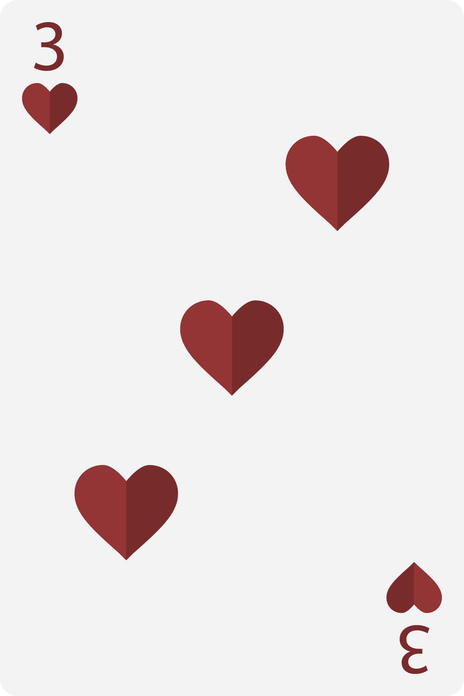
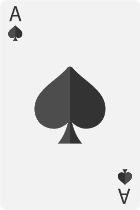
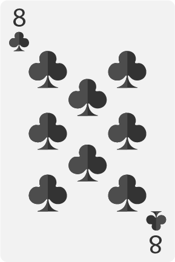

רמי
משחקי גיל הזהב
- קלפים: רגילים(קהילה)
- מספר שחקנים: 2-6
- מיקום: מפגשים חברתיים
- המלצה של אביגדור "בוקר עם הפרלמנט"
סרטון הוראות
הוראות
מטרת המשחק: הרכבה של סדרות המכילות לפחות שלושה קלפים כל אחת.
חלוקת קלפים לפי מספר שחקנים:
- 2 שחקנים = 10 קלפים
- 3-4 שחקנים = 7 קלפים
- 5-6 שחקנים = 6 קלפים
תחילת המשחק
מערבבים את הקלפים ,כל שחקן מקבל 7 קלפים. מושכים קלף נוסף מהקופה ושמים אותו בצד, קלף זה הוא הקלף הפותח של המשחק ומהווה הקלף הראשון של ערימת הקלפים שאליה יזרקו השחקנים את הקלפים שלהם במהלך המשחק. יתר הקלפים נותרים חסויים בתור קופה כשפניהם כלפי מטה.
מה נחשב לסדרה חוקית?
סדרה עולה של קלפים בעלי אותה הצורה (לצבע אין חשיבות) נקראת "רץ". לדוגמה:
- 
סדרת קלפים בעלי אותו מספר אך בעלי צורות שונות נקראת "סט". לדוגמה:


*האס (A) יכול להופיע רק באחת מקצוותיה של סדרה מסוימת, ולא באמצע.

- 
מהלך המשחק
השחקן הראשון הוא זה שהוגרל מראש ועליו להחליט אם לקחת את הקלף הראשון מתוך ערימת הקלפים שנזרקו או למשוך קלף מהקופה. לאחר מכן עליו לזרוק קלף לשחקן הבא בתור. רצוי שזהו יהיה קלף אשר הוא איננו זקוק לו. על השחקן הבא בתור להחליט אם לקחת את הקלף שהשחקן הראשון זרק או לקחת קלף מקופת הקלפים. גם הוא צריך לזרוק קלף לשחקן הבא בתור וחוזר חלילה.
איך מנצחים במשחק?
המנצח במשחק הוא זה שהרכיב מכל 7 הקלפים שבידו סדרות תקניות-"סט" או "רץ".
איך מחשבים את הניקוד בכל סיבוב?
אס = 1 נקודות
2-10 = נקודות כמספר הקלף

- 
נסיך, מלכה, מלך = 10 נקודות
ההיסטוריה של רמי
רמי הוא משחק שבנוי עפ"י שיטת – "משוך וזרוק".ישנן תיאוריות רבות בנוגע למקור של משחק הרמי. אחת התאוריות היא שרמי התפתח ממשחק שנקרא "Conquain", שמקורו בספרד או במקסיקו והגיע לאמריקה על ידי מהגרים מספרד. על פי התיאוריה, זו הייתה הדוגמה הראשונה של רמי וכל שאר סוגי הרמי נבעו ממנה. תאוריה נוספת למשחק הרמי ולמשחקים הדומים מיוחסת למהגרים מסין, ולסוחרים הבריטיים והפורטוגזיים אשר ערכו הכרות בעזרת המשחק במהלך שהייתם ביבשת. קיימת גם גירסא ישראלית למשחק שנקראת רמיקוב, שפותח בשנות ה 40 ע"י מפתח המשחקים הישראלי אפרים הרצנו. רמי בשלל גירסאותיו הוא בין המשחקים הנפוצים והפופולריים בעולם.